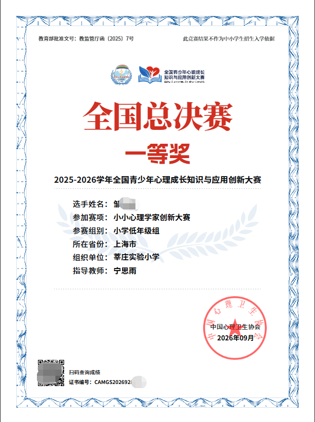
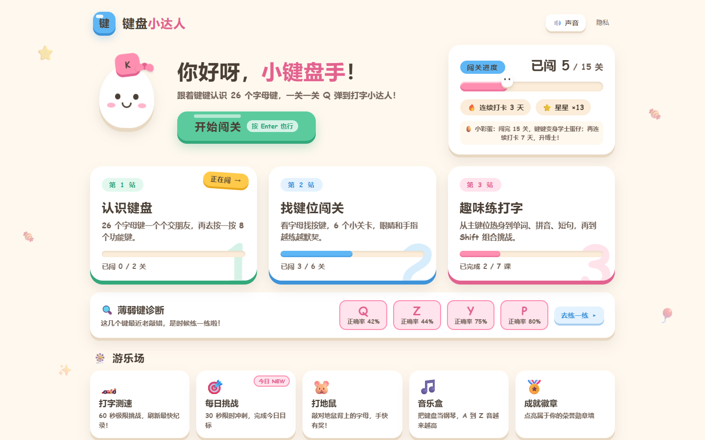
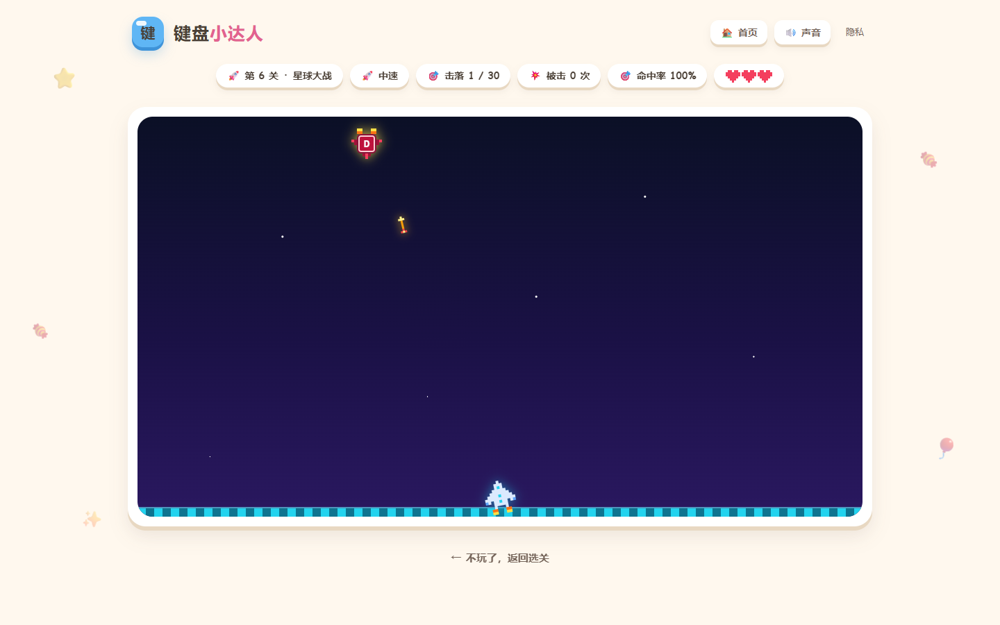
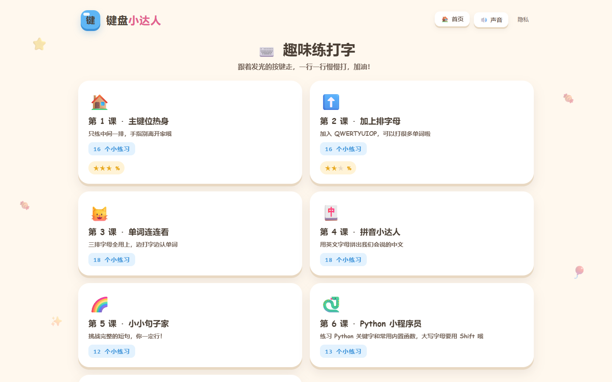
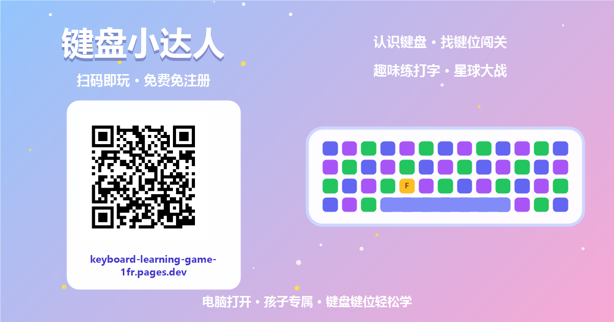

上个月，我儿子坐在电脑前参加一场编程比赛。
题目他会做。思路也对。
但我站在他身后，看着他那两根食指在键盘上戳一下、抬头看一眼屏幕、再低头找下一个字母——一道题的时间，一小半花在了找键上。
那一刻我意识到一件事：卡住他的不是编程，是键盘。
— 01 —
学 Python 之前，先被键盘拦住了
我儿子是低年级小学生。图形化编程刚"毕业"，拖拖积木块就能做游戏的那种。今年开始学 Python，正式进入敲代码的阶段。
问题马上就来了。
图形化编程几乎不用键盘，鼠标拖一拖就完事。可 Python 不一样——每个字母都得自己敲。26 个字母在哪儿、Shift 什么时候按、冒号和分号怎么够……对孩子来说，这些全是陌生的。
他平时挺爱比赛的，今年在一个新的白名单赛事上拿了个全国总决赛一等奖——赛事比较新，我们主要图个比赛经验，奖不算硬核。但既然想在这条路上走下去，接下来还有考级、还有比赛，要敲的内容只会更多，手跟不上是真的白搭。
我研究了一圈现成的打字练习工具：要么是英文界面、满屏广告；要么枯燥到像考试，孩子坐五分钟就跑。
挑来挑去，我决定干脆自己做一个。
说出来你可能不信：我在软件行业待了十几年，但从来没写过一行产品代码。我不是程序员。
但今年 AI 编程实在太猛，我特别想认真试一次：vibe coding、AI coding，到底能为孩子的学习和成长带来什么，又能为我们大人的工作、学习带来什么——是助力，还是相反？就拿这个小需求练手，学着带 AI 干活：我提需求、试玩、挑毛病，它来写。指法顺序怎么排、星球大战怎么玩，都是一轮一轮磨出来的。

他的获奖证书。赛事还比较新，我们主要图个经验。但比赛这条路他想走下去，我能做的，就是把路铺平一点。
— 02 —
带着 AI，写了三个游戏
这个网站叫「键盘小达人」。设计思路只有一条：练键盘这件事，得让孩子觉得是在玩，不是在学。

第一个模式叫「认识键盘」。屏幕上先出现两只小手的引导，孩子把手指摆对位置，再敲对应的键。按对了，会立刻有真人语音把字母读出来——26 个字母的读音都是提前录制好的，按键即出声，零延迟。
第二个模式叫「找键位闯关」，一共六关。前面几关是"看字母找按键"，后面两关是他最喜欢的：一个是按 A 到 Z 的顺序弹奏字母歌，按错或停顿超过 2 秒就得从头再来；另一个是像素风的星球大战——字母开着战斗机从天上往下掉，按对键就发射激光把它击落。

他现在每天放学回家，先打两把星球大战再说。被击落了不服气，自己会念叨"再来一次"——我心里偷着乐，这不就是在练指法吗。
第三个模式叫「趣味练打字」，从主键位热身开始，慢慢过渡到单词、拼音、小短句，再到 Shift 大小写组合。正确率 100% 的时候，会有一句"你真棒"的语音奖励——这句是他自己要求的。

— 03 —
给孩子的东西，我坚持了这几条
作为爸爸，我在这个网站上守住了几条底线：
不用注册，打开就玩。孩子的注意力只有那么长，登录注册这一套走完，兴趣早就没了。
不收任何信息。纯前端网页，没有账号系统，不收集姓名、年龄、照片。孩子的练习记录只存在自己电脑的浏览器里，不上传任何服务器。
免费，而且没有广告。给孩子用的东西，不该有乱七八糟的弹窗。
电脑上用效果最好。毕竟，学键盘就是为了以后敲真键盘的。
有天晚上他练完，突然抬头跟我说："爸爸，我今天盲打了 asdf jkl;，一次都没低头。"
那语气，跟拿了奖状一样骄傲。
— 04 —
如果你家也有个学编程的娃
这个网站现在就挂在互联网上，谁都能用，不用问我。它还会一直更新——最近刚加了一个「游乐场」：打字测速挑战、每日挑战、打地鼠、音乐盒，还有蛋仔装扮商店和成就徽章墙，闯关攒的星星可以给孩子的小蛋仔买蝴蝶结、戴皇冠。后面有空，我再让 AI 继续加新玩法。
源码也放在了 GitHub 上，欢迎关注、欢迎提建议：github.com/shaun-zou/keyboard-learning-game
提醒一句：临时域名偶尔会不稳定。哪天打不开，就去 GitHub 仓库把整个项目下载下来，解压后双击就能在本地玩；或者直接后台留言找我，我把打包好的静态文件发你。

扫码或点击文末「阅读原文」，在电脑上打开就能玩。
我没法替他上赛场，也没法替他敲代码。
但键盘这一关，我可以陪他练过去。
也许你的孩子，也用得上。